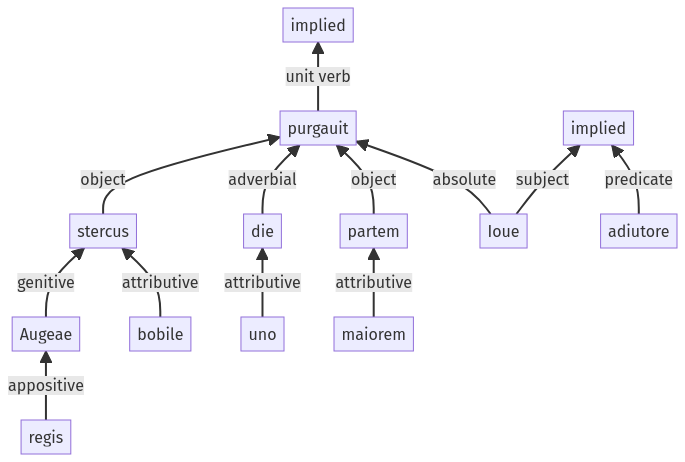

Hyginus, Fabulae, 30pr.7.1-30pr.7.11a
30pr.6.1-30pr.6.12a | 30pr.7.12-30pr.7.16a
Sentence 422
30pr.7.1-30pr.7.11a
Augeae regis stercus bobile uno die purgauit, maiorem partem Ioue adiutore;
1 Augeae regis stercus bobile uno die purgauit maiorem partem
2 Ioue adiutore
Augeae regis stercus bobile uno die purgauit, maiorem partem Ioue adiutore;
Highlighting:
- connecting words
- unit verb
- subject
- object
Color code:
- independent clause (level 1, transitive verb)
- participle (level 2, linking verb)
